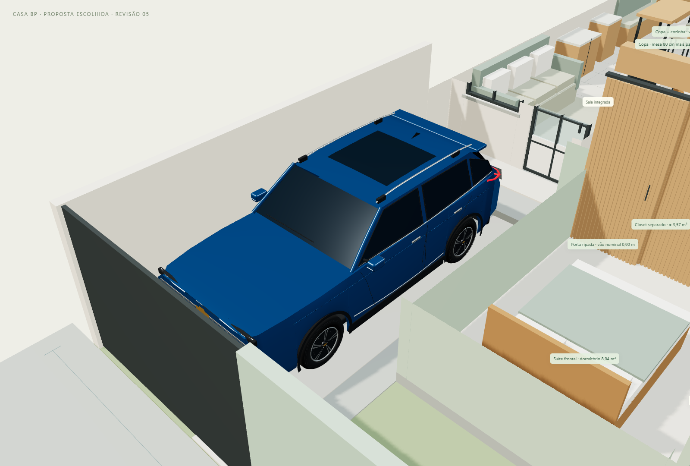
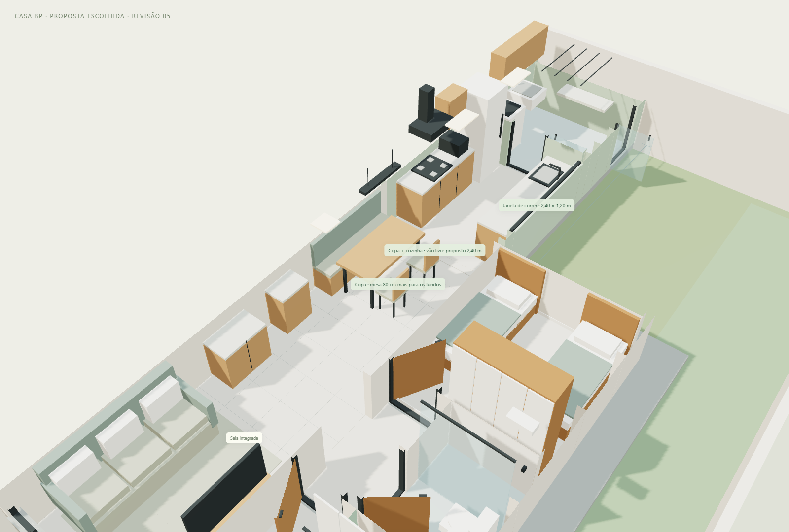
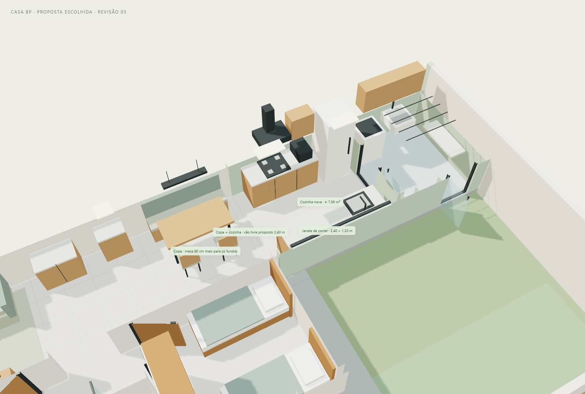
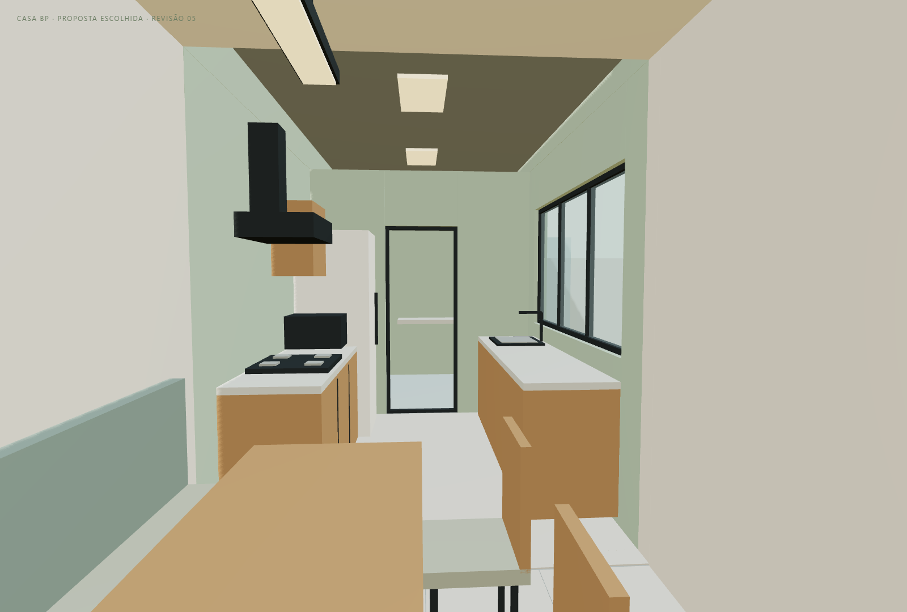
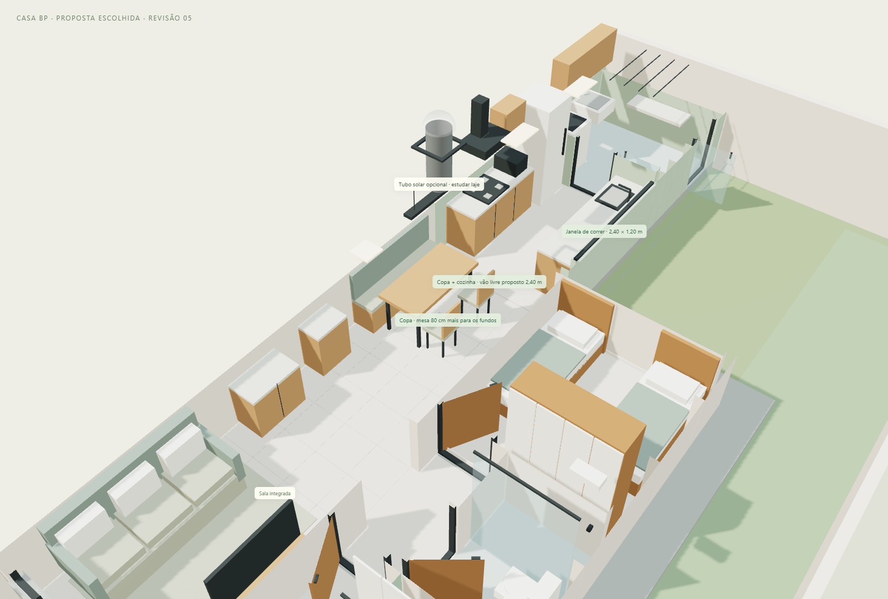
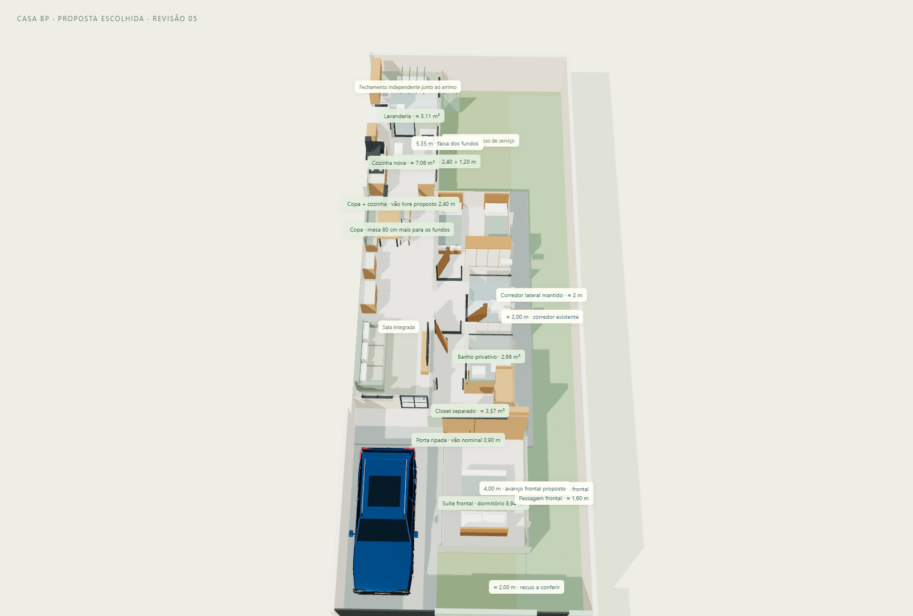
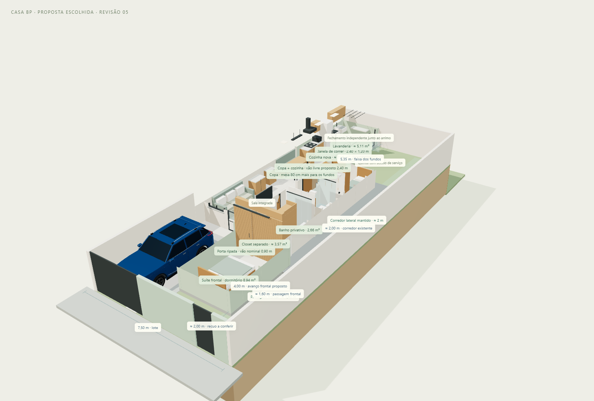
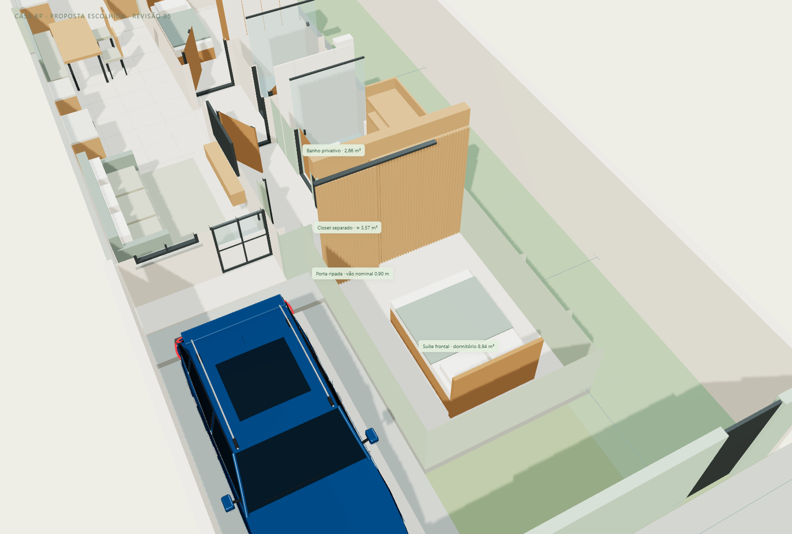
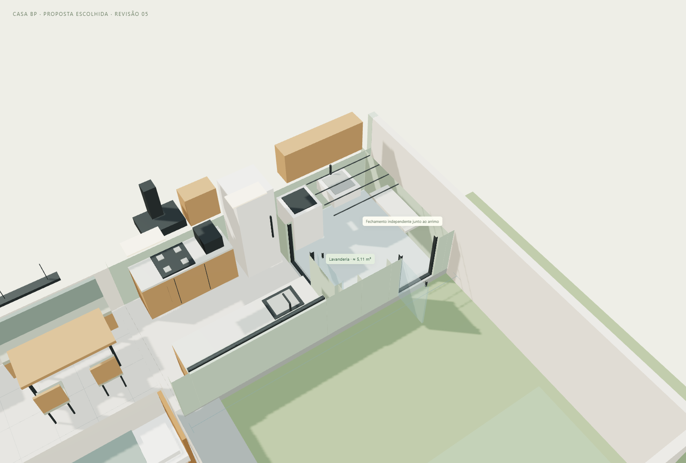

A mesa foi levada 80 cm para os fundos, o fechamento com a porta P02 foi retirado da proposta e a janela da cozinha foi ampliada. Suíte, closet, vaga, corredor e lavanderia mantêm a distribuição da revisão 03, preservada em cópia separada.
O carro genérico foi substituído por uma reconstrução visual autoral da Tracker Premier 2026. A modelagem contém carroceria com recortes de rodas, vidros escuros, retrovisores, quatro rodas 17”, assinatura luminosa em dois níveis, grade frontal, lanternas, rack e emblemas. As formas e os detalhes são aproximados a partir de referências fotográficas; não se trata de uma malha CAD oficial da Chevrolet.
| Dimensão de referência | Medida |
|---|---|
| Comprimento | 4,304 m |
| Largura da carroceria | 1,791 m |
| Largura com os retrovisores | 2,057 m |
| Altura com rack | 1,626 m |
| Entre-eixos | 2,570 m |
Fonte: documento Marketing Chevrolet — ano/modelo 2026, revisão de 10/Jul/2025, página 5.
Na reserva de piso de 2,80 × 5,10 m, o veículo fecha dentro dos limites modelados. A posição prioriza o lado da casa: cerca de 0,70 m entre carroceria e ampliação, ou 0,57 m no ponto do espelho. Do outro lado, cerca de 0,30 m até a carroceria e 0,17 m no espelho. A folga no comprimento é de aproximadamente 0,41 m na frente e 0,39 m atrás dentro dessa reserva de piso. Essas medidas não garantem manobra nem abertura total das portas. Conferir o portão, o veículo real e as condições do local.
Use “Tracker na vaga” na casa ou abra Tracker em detalhe para girar o carro, escolher a cor e exportar seu GLB separadamente. O modelo independente é uma visualização de exterior; não inclui mecânica ou interior detalhado.

| Item | Distribuição da revisão 04 |
|---|---|
| Mesa e assentos | Mesa de 1,50 × 0,75 m e conjunto de assentos deslocados 0,80 m para trás, na perspectiva de quem entra pela sala. O buffet foi reposicionado antes da mesa. Passagem à direita das cadeiras: aproximadamente 0,82 m na posição desenhada. |
| Integração | Vão proposto de 2,40 m entre copa e cozinha. A parede posterior do dormitório foi preservada. A abertura depende da avaliação estrutural; não foi dimensionada viga, verga ou reforço. |
| Área conjunta | Faixa interna de 2,40 × 6,23 m: aproximadamente 14,95 m² antes dos móveis. A cozinha nova continua com 7,06 m²; a copa tem 7,56 m² e o antigo fechamento ocupa 0,34 m². A integração não aumenta a largura do lote ou duplica a área da cozinha. |
| Janela para o quintal | Esquadria de correr de 2,40 × 1,20 m, peitoril proposto de 1,05 m. Área bruta de abertura de 2,88 m², contra 1,32 m² no estudo anterior. Área de vidro e abertura útil para ventilação serão menores devido aos marcos e folhas. |
| Geladeira e bancadas | Geladeira transferida para a esquerda, ao fundo e fora da frente da janela. Pia na bancada direita, voltada ao quintal; cooktop e coifa à esquerda. Bancadas de 1,70 + 2,40 m, totalizando 4,10 m lineares. Corredor central nominal de 1,20 m, reduzido para 1,10 m junto à geladeira. Armário alto e micro-ondas fora da janela. |
| Lavanderia | Mantida ao fundo, com 5,11 m², fechamento próprio junto ao muro e saída lateral de serviço. |
Sim, a parte mais interna continua sendo o ponto mais delicado para luz natural. A janela maior e a abertura total entre copa e cozinha melhoram o caminho da luz, sobretudo perto da mesa, mas a copa ainda recebe luz lateral de outros setores. A entrada da copa fica mais distante das aberturas e pode precisar de iluminação elétrica durante parte do dia.
A análise de iluminação a seguir corresponde à revisão 04, com o antigo carro ilustrativo; não foi recalculada para a Tracker. A análise foi feita com o telhado e a laje fechados, incluindo paredes, móveis e muros desenhados, e comparando três pontos fixos. Para cada ponto, foram lançados 32.768 raios no hemisfério superior, com ponderação cossenoidal. O vidro foi tratado como transparente, sem perdas. O resultado abaixo é um índice geométrico de céu diretamente visível, não um fator de luz diurna, porcentagem de iluminação, medida em lux ou comprovação de atendimento a norma.
| Ponto a 0,80 m de altura | Revisão 03 | Integração + janela maior | Com tubo solar opcional |
|---|---|---|---|
| Entrada da copa | 0,24% | 0,38% | 0,39% |
| Mesa deslocada para o fundo | 0,11% | 1,15% | 1,62% |
| Cozinha / circulação central | 4,89% | 7,78% | 7,78% |
O diagnóstico indica que a nova janela fica mais exposta ao céu na cozinha e que a mesa passa a ter um caminho de luz menos bloqueado. A entrada da copa permanece com menor exposição direta. Não se deve converter a diferença entre esses números em “tantas vezes mais claridade”: reflexões das paredes, características dos vidros e clima não foram simulados.
O tubo solar representa uma possibilidade de captar luz no telhado e conduzi-la à copa; seu desenho não calcula a reflexão dentro do duto, o difusor nem a transmissão óptica. É uma opção de iluminação, sem previsão de ventilação. Fundação, estrutura, laje, rufo, estanqueidade e instalação precisam de avaliação própria.
A orientação técnica consultada recomenda combinar luz natural e elétrica e considerar o ganho de calor; entradas zenitais podem ajudar ambientes sem janela direta, desde que bem posicionadas e dimensionadas. Fontes: YourHome — Lighting e YourHome — Skylights and roof windows.
Use “Copa integrada”, “Cozinha nova” e “Vista de dentro”. Ative “Tubo solar opcional” para comparar a intervenção proposta na cobertura. A exportação GLB inclui apenas a opção ativa, sem duplicar telhados. A versão padrão está salva sem tubo solar.
Dormitório frontal: 8,94 m²; closet separado: 3,57 m²; banho privativo: 2,66 m². Mantidos a vaga e o corredor lateral: 2,00 m junto à casa existente e 1,60 m ao lado da ampliação frontal. Avanço frontal de 4,00 m e recuo restante estimado de 2,00 m continuam condicionados à confirmação da implantação e dos recuos permitidos.
Área nova em projeção externa: 25,62 m², sem aumento em relação à revisão 03. A faixa fechada dos fundos permanece em X=0–2,68 m e Z=8,51–13,86 m. A lavanderia não usa o arrimo como apoio definido de cobertura.







